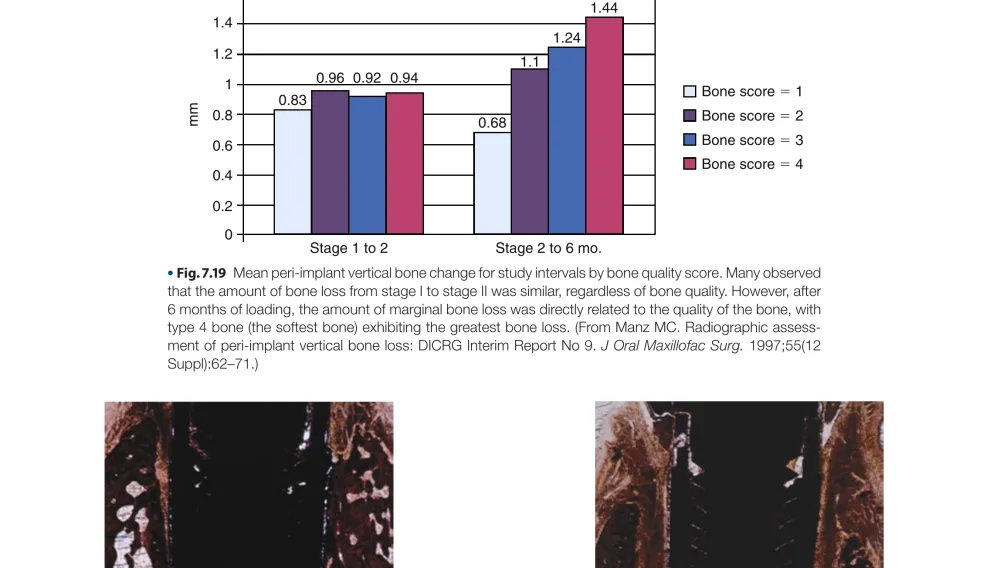
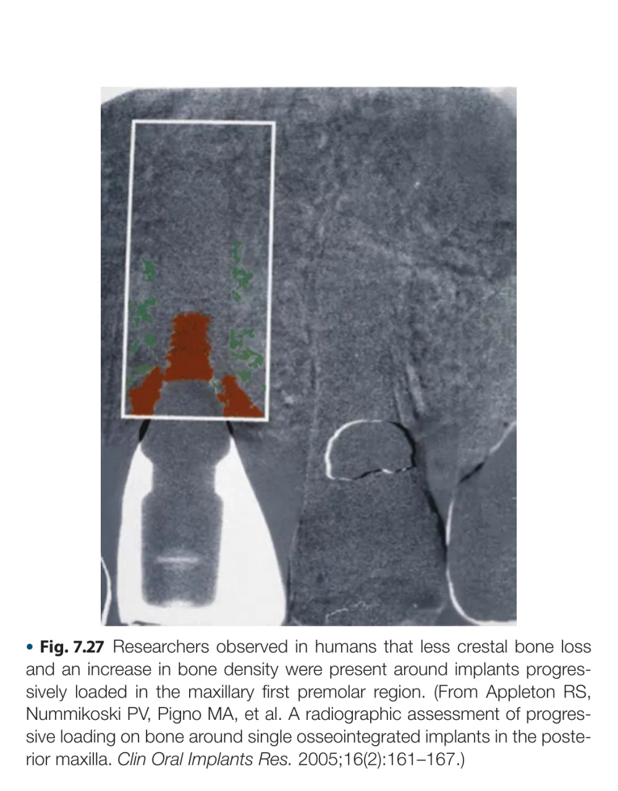

نسخه استخراجشده؛ ترجمه یا تأیید علمی انجام نشده است. وضعیت: incomplete
تراکم استخوان در قضیهی درمان استرس جایگاه ویژهای دارد، چون همزمان بر چند چیز اثر میگذارد.
پیامد اول — استحکام:
«تراکم استخوان مستقیماً به استحکام استخوان مربوط است. خواص بیومکانیکی چهار تراکم مختلف استخوان در فکها گزارش شده است. استخوان کورتیکال متراکم ده برابر قویتر از استخوان ترابکولار نرم و ریز است.»
ده برابر. یعنی همان ایمپلنت با همان بار، در استخوان نرم با حاشیهی ایمنی بسیار کمتری کار میکند. سفتی هم همین رابطه را دارد: مدول یانگ استخوان متراکم حدود ده برابر استخوان اسفنجی است.
پیامد دوم — کرنش: «در استخوان متراکمتر، کرنش کمتری تحت یک بار معین در مقایسه با استخوان نرمتر وجود دارد.»
پیامد سوم — تطابق سفتی: «هرچه استخوان متراکمتر، سفتتر است، و ناهمخوانی بیومکانیکی کمتری با تیتانیوم در حین بارگذاری وجود دارد.»
پیامد چهارم — بازسازی: «در نتیجه، بازسازی استخوانی کمتری در استخوان متراکم در مقایسه با استخوان نرمتر تحت شرایط بار مشابه رخ میدهد. کاهش بازسازی استخوان میتواند به کاهش تحلیل استخوان بینجامد.»
و این چهار به هم گره خوردهاند: «چون افزایش تراکم استخوان به استحکام استخوان، مدول الاستیک، بازسازی استخوان، و کاهش تحلیل استخوان مارجینال مربوط است، این موجودیتها ممکن است با یکدیگر مرتبط باشند.»
پس تراکم استخوان یک متغیر نیست؛ یک گره است که چهار زنجیره از آن بیرون میآید.
و یک تمایز مهم دربارهی جهت نیرو در استخوان:
با عدد: «استخوان در برابر نیروهای فشاری قویترین است، ۳۰ درصد ضعیفتر در برابر بارهای کششی، و ۶۵ درصد ضعیفتر در برابر نیروهای برشی.»
سه عدد را کنار هم بگذار: فشاری ۱۰۰، کششی ۷۰، برشی ۳۵. و همین است که تلاش برای تبدیل برش به فشار را توجیه میکند — تقریباً سه برابر شدن ظرفیت.
و ضعف نظریههای رقیب: صادقانه باید گفت که برخی توضیحهای رایج تحلیل کرستال ناکافیاند. برای نمونه، فرضیهی «عرض بیولوژیک» اطراف ایمپلنت توضیح نمیدهد که چرا تحلیل کرستال بیشتر اغلب در استخوان نرم در مقایسه با استخوان متراکمتر پس از بارگذاری مشاهده میشود، و نه نرخهای بالاتر شکست ایمپلنت در استخوان با کیفیت کمتر پس از بارگذاری را.
یعنی هر نظریهای که تفاوت رفتار استخوان نرم و متراکم را توضیح ندهد، ناقص است — و توضیح مبتنی بر استرس این کار را میکند.
و حالا دادهی انسانی که این را عدد میکند — یک مطالعهی آیندهنگر:
یافتهی کلیدی: «تحلیل اولیهی استخوان پریایمپلنت از زمان کاشت تا مرحلهی دوم، برای همهی کیفیتهای استخوان مشابه بود.»
اما پس از تحویل پروتز، تصویر کاملاً عوض شد: «شش ماه پس از تحویل پروتز، تحلیل استخوان پریایمپلنت رادیوگرافیک افزوده از ۰٫۶۸ میلیمتر برای کیفیت ۱، تا ۱٫۱ میلیمتر برای استخوان نوع کیفیت ۲، ۱٫۲۴ میلیمتر برای کیفیت ۳، و ۱٫۴۴ میلیمتر برای استخوان کیفیت ۴ متغیر بود.»
و جمعبندی: «به بیان دیگر، هرچه استخوان متراکمتر، تحلیل استخوان پریایمپلنت کمتری پس از تحویل پروتز مشاهده شد.»
این طراحی مطالعه بسیار روشنگر است. پیش از بارگذاری، تراکم استخوان تفاوتی نساخت. پس از بارگذاری، ساخت. یعنی تراکم استخوان یک متغیر بیومکانیکی است، نه یک متغیر جراحی.
و دادهی حیوانی که رابطهی دوز-پاسخ را نشان میدهد — مدل میمون:
در مدل میمون، روی ایمپلنتهای اینتگرهشده کراونهایی گذاشته شد: بدون تماس اکلوزالی (گروه کنترل)، و با تماسهای زودرس ۱۰۰، ۱۸۰ و ۲۵۰ میکرومتر. پس از ۴ هفته:
• گروه ۱۰۰ میکرومتر و کنترل: سطوح استخوان کرستال مشابه بودند
• گروه ۱۸۰ میکرومتر: تحلیل استخوان کرستال از نظر آماری معنادار
• گروه ۲۵۰ میکرومتر: دو تا سه برابر تحلیل گروه با زودرسی متوسط
یک آستانه و یک شیب. در ۱۰۰ میکرومتر تفاوتی نبود؛ از ۱۸۰ به بعد معنادار شد؛ و از ۱۸۰ به ۲۵۰ دو تا سه برابر شد. این یعنی رابطه خطی نیست — با افزایش زودرسی، شتاب میگیرد.
و پیامد بالینیاش مستقیم است: تنظیم اکلوزال در ایمپلنت، بحث میکرومتر است نه میلیمتر.
و دو یافتهی حیوانی دیگر که تصویر را کامل میکنند:
• در یک مطالعه، ایمپلنتها در فمور سگ عمود بر محور استخوان بلند کاشته شدند. پس از اعمال بار کششی به مدت تنها ۵ روز، سلولهای استخوانی بازآرایی شدند تا از الگوی رزوهی ایمپلنت پیروی کنند و در برابر بار مقاومت کنند. — و «این الگوی منحصربهفرد استخوان فقط تا ۳ تا ۴ میلیمتر اطراف ایمپلنتها مشاهده شد.»
پنج روز. استخوان بسیار سریعتر از آنچه تصور میشود به بار پاسخ میدهد — و پاسخش موضعی است، فقط تا چند میلیمتر.
• در مدل سگی دیگری سه گروه مقایسه شد: بدون بار، بار استاتیک، و بار دینامیک. «ایمپلنتهای با بار دینامیک تنها گروهی بودند که تحلیل استخوان کرستال نشان دادند.»
پس مسئله «بار» نیست؛ «بار متغیر و چرخهای» است — و این دقیقاً با عامل چهارم خستگی (شمار چرخهها) و با جایگاه براکسیسم در صدر عوامل خطر میخواند.

تا اینجا استخوان را متغیری دیدیم که داده شده است. این بخش نشان میدهد که میتواند تغییر کند.
خبر خوب: «چون نیروهای عملکردی روی ایمپلنت گذاشته میشوند، استخوان اطراف میتواند با استرسها سازگار شود و تراکمش را افزایش دهد، بهویژه در نیمهی کرستال بدنهی ایمپلنت در طول ۶ ماه تا ۱ سال نخست بارگذاری.»
سه عنصر این جمله را جدا کن:
• سازگاری با استرس — استخوان منفعل نیست
• بهویژه در نیمهی کرستال — دقیقاً همان جایی که بیشترین استرس را میگیرد
• ۶ ماه تا ۱ سال نخست — یک پنجرهی زمانی مشخص
و شواهد انسانیاش:
«یک گزارش بالینی نشان داد که ایمپلنتهای تکدندانی که بهطور تدریجی بارگذاری شده بودند در ناحیهی پرمولر اول انسان، تحلیل استخوان کمتر و افزایش تراکم استخوان بیشتری در نیمهی کرستال رابط ایمپلنت نشان دادند، در مقایسه با ایمپلنتهای بارگذارینشدهی تدریجی در همان ناحیهی فک، و حتی در همان بیمار در سمت مقابل.»
به عبارت آخر دقت کن: «همان بیمار در سمت مقابل».
این کنترلی بسیار قوی در یک مطالعهی بالینی است — ژنتیک، سن، تغذیه، بهداشت، عادتها، همه یکسان. تنها متغیری که فرق داشت، روش بارگذاری بود.
پس نتیجهگیری قابل دفاع است: بارگذاری تدریجی، تراکم استخوان کرستال را بالا میبرد و تحلیل مارجینال را کم میکند.
و چرا این با قضیهی درمان استرس گره میخورد؟
چون تراکم استخوان یکی از پنج متغیر سطح کاربردی بود — و تنها متغیری که میتواند پس از کاشت بهبود یابد. چهار متغیر دیگر (شمار، عرض، طول، طراحی) در جراحی قفل میشوند.
یعنی پس از جراحی، بارگذاری تدریجی ابزار اصلی تو برای بهتر کردن تکیهگاه استخوانی است — ولی جایگزین شمار کافی ایمپلنت نیست.
و سازوکار بافتیاش: «استخوان ترابکولار ریز کمتراکمتر از استخوان ترابکولار درشت است.» بارگذاری، الگوی ریز را به درشت تبدیل میکند؛ و چون تراکم استخوان مستقیماً به استحکام و مدول الاستیکش مربوط است، در فاز بارگذاری عملکردی استخوان کرستال بهتدریج قویتر میشود و ناهمخوانی بیومکانیکی میان تیتانیوم و استخوان کاهش مییابد.
یعنی ناهمخوانی سفتی که در یونیت پیش مسئله بود، با گذشت زمان و بارگذاری درست کمتر میشود.
و پایهی سلولی کل این پدیده: «بازسازی استخوان در سطح سلولی با محیط مکانیکی کرنش کنترل میشود. کرنش بهصورت تغییر طول تقسیم بر طول اولیه تعریف میشود، و واحد کرنش بر حسب درصد بیان میشود.»
پس زنجیره کامل است: بار ← استرس ← کرنش ← سیگنال سلولی ← بازسازی استخوان ← تغییر تراکم ← تغییر ظرفیت تحمل بار. و طراحی پروتزی، ورودی این زنجیره را تعیین میکند.
و دو عدد که مقیاس ناهمخوانی را نشان میدهند:
یادت باشد «تیتانیوم ۵ تا ۱۰ برابر سفتتر از استخوان کورتیکال است» — و در نمودار مدول الاستیسیته، تیتانیوم حدود ۱۴ × ۱۰⁶ psi در برابر استخوان حدود ۳ × ۱۰⁶ psi است.
و برای مقایسه، اکسید آلومینیوم حدود ۶۰ × ۱۰⁶ psi است — یعنی حتی سفتتر. هرچه اختلاف مدول دو مادهی در تماس بیشتر، تمرکز استرس در نخستین نقطهی تماسشان — یعنی کرست — بیشتر.
و الگوی توزیع استرس که همهی این بحث را جمع میکند:
تحلیل اجزای محدود سهبعدی یک ایمپلنت تیتانیومی پس از بارگذاری محوری نشان میدهد که «الگوی V-شکل کرنش در ناحیهی کرستال بیشترین مقدار را دارد و با پخش شدن استرس در طول ایمپلنت، شدتش کاهش مییابد.»
و تأیید بالینیاش: «تحلیل استخوان مارجینال که بهطور بالینی و رادیوگرافیک اطراف ایمپلنتها مشاهده میشود، الگویی مشابه کانتورهای استرس در این گزارشها را دنبال میکند.»
یعنی شکل تحلیل استخوانی که در رادیوگرافی میبینی، نقشهی استرس است. و همین توضیح میدهد چرا طول بیشتر ایمپلنت، استرس کرستال را کم نمیکند — چون استرس اصلاً در آن عمق نیست.
